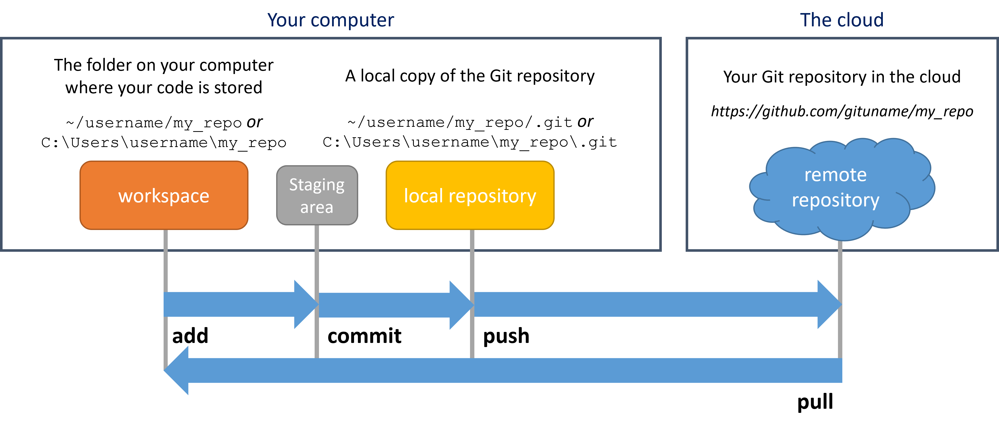
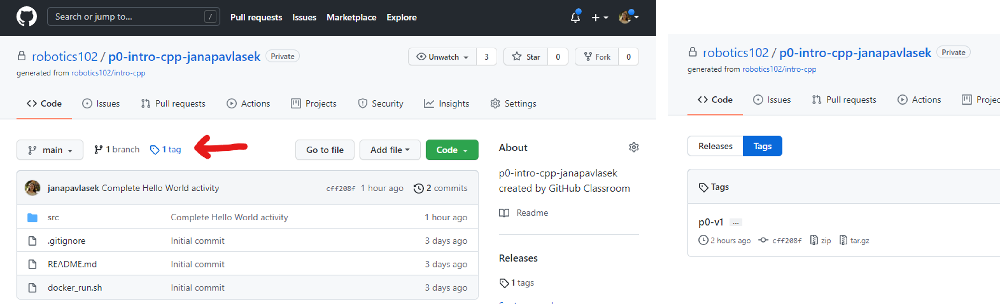
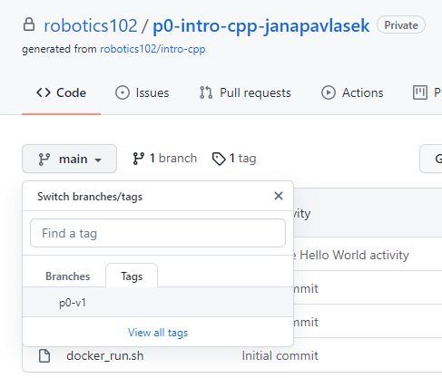

This is a brief guide to the most important GitHub commands for getting started with Git. It is intended to help you get started with using Git for course projects. For those of you looking for more resources or a different perspective, links to external references are provided in Further Reading.
This tutorial assumes that you have Git installed on your computer. Installation instructions can be found in the computer setup tutorial.
For a step-by-step guide to installing and using Git, designed to get you started on Project 0, see the Lab 1 slides.
Your repository is stored in the cloud, on github.com. You create a local copy of the repository on your computer by cloning it. You can then modify the code in your own workspace. You can sync local changes to the remote repository by adding them to the staging area, committing the change, then pushing them to the remote repository. You can sync changes from the remote repository to the local one by pulling them.
Git is a program for software version control which runs on your computer. GitHub is a website which hosts repositories and provides features like pull requests and managing repository settings which you access from a browser. We will be using GitHub in ROB 102. Other websites like GitLab and BitBucket also use Git to interact with repositories, and provide similar features to GitHub in the browser. You can use Git to interface with all of them. This tutorial describes how to use Git on the command line to update repositories which are stored on GitHub.
We will be using the command line to interact with GitHub. The commands covered on this page should be typed in a terminal. On Windows, use Git Bash as the terminal. On Mac or Linux, use the built in terminal.
All these Git commands, with the exception of git clone, must be executed from inside a valid GitHub repository. In other words, the terminal's working directory should be the GitHub repository. To check the current working directory of your terminal, type pwd. To change directories, use the cd command.
Cloning gets a copy of a remote repository onto your computer. To clone a repository, in your terminal, change directories (using cd) into the folder where you would like your repository to go. Then, do:
git clone [ADDRESS]Substitute [ADDRESS] with the address for the repository you wish to clone. You can get the address from the repository page on GitHub. On the repository page, click on the green button that says "Code" and select the clipboard icon to copy the link to the repository:
The status command is one of the most useful commands. It tells you which branch you're on and whether you have any uncommitted changes or unpushed commits in your local repository. You should use it often to make sure you know what's been changed in the code. In a Git repository, type:
git statusYou can see how the files have been modified using the diff command:
git diffTo see the changes to a single file, do git diff [FILE_NAME] (replace [FILE_NAME] with the file of interest).
To push changes there are three major steps: add, commit, and push. Make sure you use git status throughout to make sure you are keeping track of what you are doing.
git add [PATH_TO_FILE][PATH_TO_FILE] with the path to the file you want to stage. You can list multiple files in a row. The command:
git add .git status to make sure you know which files you are adding and you don't add a change you don't want by mistake.
git commit -m "Make change X to add feature Y"git pushTo sync your local repository with changes pushed to the remote repository (for example, changes pushed by a teammate or from a different computer), in the Git repository, do:
git pullWarning: If you have made local changes that are incompatible with the code in the remote repository, you might have a merge conflict. This could happen if you have changed the same function as your teammate, and Git does not know which version it should keep. Merge conflicts need to be fixed manually. Learn about how to fix merge conflicts here.
You will indicate which version of the code you want graded through a Git feature called tagging. Once your code is ready to go, you can tag the current version by typing the following command in a terminal, from inside the repository directory, replacing [TAG] the the tag name (for example, p0-v1):
git tag [TAG]You can look at the tag and check that your most recent code is included with the following command:
git show p0-v1Finally, push your tag to GitHub:
git push origin p0-v1Make sure your tag was pushed correctly. You can do this by navigating to the repository in your browser and clicking on the tag icon:
You can also view the code associated with the tag by selecting it from the "Code" tab of the repository:
See Lab 5 slides.
| Action | Command | Details |
|---|---|---|
| Cloning a repository |
[ADDRESS] with the address to the repository you want to clone.
|
Cloning |
| Getting repository status |
|
Status |
| Viewing local changes |
|
Status |
| Staging files |
[FILES] with the files to be committed. Replacing [FILES] with . adds all the modified files. Next step: Committing.
|
Pushing |
| Committing changes |
|
Pushing |
| Pushing changes |
|
Pushing |
| Pulling changes |
|
Pulling |
| Creating a tag |
[TAG] with the name of the tag (for example, p0-v1).
|
Tagging |
| Showing tag details |
[TAG] with the name of the tag.
|
Tagging |
| Pushing a tag |
[TAG] with the name of the tag.
|
Tagging |
The Pro Git book provides an in-depth description of git and version control. As different people often learn through different styles, the Git Magic tutorial has also proved quite useful when a different perspective is needed. git: the simple guide has often been an accessible quick start resource.